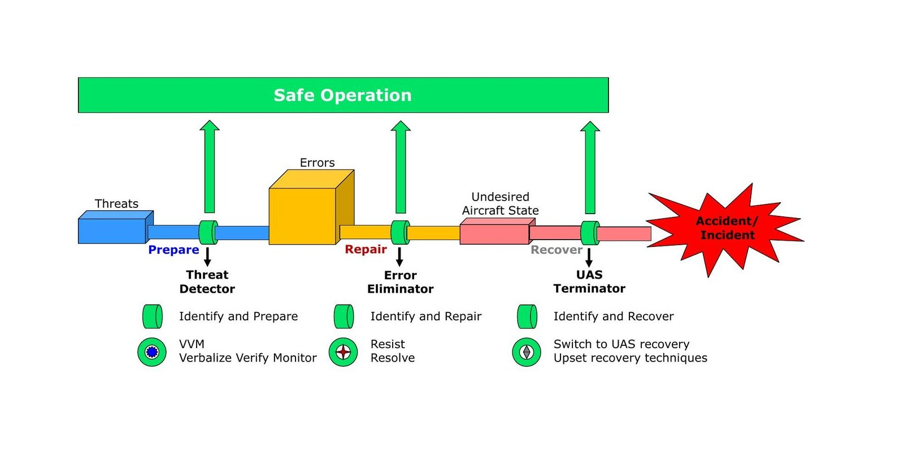

Lesson 04: The TEM Model and Threats
Learning objectives
- Describe the three components of the TEM model.
- Define a threat and its types (anticipated, unexpected, latent; environmental, organisational).
- Classify threats in practice.

The TEM model
The TEM model is a conceptual framework to understand, from an operational point of view, the relationship between safety and human performance in a dynamic context. It is descriptive (it captures normal operations) and diagnostic (it quantifies the context and the human response). It is used for accident analysis, line audits (LOSA), licensing and training.

Threats
Threats are "events or errors that occur beyond the influence of the flight crew, increase operational complexity, and must be managed to maintain the margins of safety". Threats come at the crew; errors come from the crew.
Tap a card to turn it over.
Examples of environmental threats
- Weather: thunderstorms, turbulence, icing, windshear, cross/tailwind, very low or high temperatures.
- ATC: traffic congestion, TCAS RA/TA, ATC error, language difficulty, non-standard phraseology, runway change, units (QFE, metres).
- Airport: contaminated or short runway, confusing or faded signs, birds, aids unserviceable, construction.
- Terrain: high ground, slope, lack of references, "black hole". Other: similar call signs.
Practice: is it a threat?
Classify each situation: tap Threat, Error or Undesired aircraft state.
Thunderstorms are forecast at destination for the time of arrival.
Threat — Anticipated environmental threat — brief the response before descent.
ATC changes the landing runway during the descent.
Threat — Unexpected environmental threat (ATC) — re-brief, check the FMS and the performance.
Practice: is it a threat? (2)
Classify each situation: tap Threat, Error or Undesired aircraft state.
A similar call sign is on the frequency.
Threat — Environmental threat — listen carefully and confirm the call sign.
The load sheet arrives late and the crew is under pressure to leave on time.
Threat — Organisational threat (operational pressure) — it can lead to errors if not managed.
Threat management is measured by whether threats are detected with enough anticipation to deploy countermeasures. It is the most proactive option to keep the margins of safety.
Key takeaways
- TEM model: threats, errors, undesired aircraft states — and countermeasures.
- Threats come at the crew: anticipated, unexpected, latent; environmental or organisational.
- Detect threats early enough to plan the countermeasures.
Knowledge check
A threat is:
- An action of the crew that leads to a deviation
- An event outside the influence of the crew that increases complexity
- An aircraft deviation induced by the crew
- An accident
Answer: B. Threats occur beyond the influence of the flight crew.